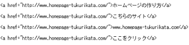
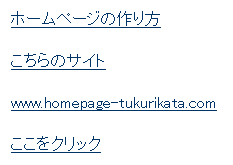

リンクのhtmlタグ <a href=""></a>
リンクタグの「a href」（エー・エッチレフ）は、使用頻度の高い基本的なHTMLタグのひとつです。一般的なリンクタグの書き方はこのようになります。
<a href="リンク先のＵＲＬ">アンカーテキスト</a>
このアンカーテキストの部分には「ホームページ名」や「サイトのURL」、もしくは「こちら」や「ここをクリック」など、サイトの運営者によってさまざまな言葉が使われています。
例えば、当サイトのトップページにリンクをする場合、たいていはこのようなアンカーテキストになるかと思います。

このようにタグを記入すると、実際にはこのように表示されます。

また、このアンカーテキストの部分に画像を設定すると画像でリンクすることもできます。その際、画像の<img src= タグの「alt=""」の箇所にリンク先のページ内容を示す言葉を記入するようにします。
<a href="リンク先のURL"><img src="画像のある場所" alt="リンク先を表す言葉"></a>
例えば、当ホームページへ「example.jpg」の画像でリンクする場合は以下のようになります。
<a href="https://www.homepage-tukurikata.com/"><img src="https://www.homepage-tukurikata.com/example.jpg" alt="ホームページの作り方"></a>
■外窓で開く設定
リンクをクリックしたときに新しい画面やタブが立ち上がり、外窓で開くように設定する場合には「target="_blank"」を記入します。（※targetの前に半角スペースが必要）
<a href="リンク先のＵＲＬ" target="_blank">アンカーテキスト</a>
ただし、すべてのリンクを外窓で開くように設定してしまうと、リンクをクリックするたびに新しい画面やタブが立ち上がってしまい、閲覧者の利便性を損なうことになります。現在のページを残したままで他のページを参照する必要があるとき以外、あまり設定しない方がよいでしょう。
■rel=“noopener”の追加
2019年頃から、上記の外窓で開く「target="_blank"」を使用する際には「rel=“noopener”」を追加することが推奨されるようになりました。これはセキュリティー上の脆弱性によるものですが、「rel="noopener"」も追加しておくことをおすすめします。（※targetとrelの前には半角スペースが必要）
<a href="リンク先のＵＲＬ" target="_blank" rel="noopener">アンカーテキスト</a>
あくまで外窓で開く場合にはということのため、「target="_blank"」を使用しない場合にはこの「rel="noopener"」を追加する必要はありません。
リンクタグのアンカーテキストとSEO対策の関係
リンクタグのなかでも「アンカーテキスト」の部分は重要な要素になり、このアンカーテキストはリンク先のページ内容を示す言葉になります。
検索エンジンはリンク先のページ内容を「アンカーテキストで表現されている内容」とみなす傾向が強く、検索結果でヒットするかしないかのアクセス数にも関係してきます。
例えば、「リンゴ」の文字列でリンクされていたらリンゴ関係のサイトと見なされるようになり、「リンゴ」で検索されたときにヒットしやすくなります。そのため、他サイトにリンクする際にはまったく関係のない言葉ではなく、そのページ内容を的確に表現するキーワードを記入するようにしましょう。
例えば、当ホームページがリンクされる場合、運営者側からするとアンカーテキストに「ホームページ」や「作り方」などのキーワードが入っていると嬉しく思います。
なかには「当サイトにリンクする際はこのようにリンクしてください。」という風に、運営者側で指定されているケースもありますが、同じアンカーテキストのみでリンクされる場合はかえって不自然な被リンクになってしまいます。
検索エンジンのSEO対策上、様々なアンカーテキストで自然にリンクが集まるのが望ましいとされていますので、特に何も指定せず、自由にリンクしてもらうのがよいでしょう。一般的に「リンクフリー」と記載されている場合には、リンクするページやアンカーテキストも含めてご自由にお任せしますという意味になります。
■rel="nofollow"でアンカーテキストを無効化
上記のように、アンカーテキストに書かれている言葉はリンク先のページ内容を表現するものとして検索エンジンは重要視しますが、リンクタグに「rel="nofollow"」を挿入することでアンカーテキストを無効にすることもできます。（※relの前に半角スペースが必要）
<a href="リンク先のＵＲＬ" rel="nofollow">アンカーテキスト</a>
グーグルの場合はこのタグが入っているとアンカーテキストもページランクも転送されません。ブログでのコメントスパムやトラックバックスパム対策などに利用されています。
ほかにも、ウィキペディアでは自サイトの宣伝目的でコンテンツが作成されるケースもあり、その対策として外部サイトには自動で「rel="nofollow"」が挿入されるケースもあります。
ちなみに、上記のように、外窓で開く「target="_blank"」を使用する際には「rel="noopener"」も追加することが推奨されています。
そのため、「rel="nofollow"」と「rel="noopener"」の両方のrel属性を指定する際には半角スペースで区切り、「rel="nofollow noopener"」のようにまとめて記述しておくとよいでしょう。
<a href="リンク先のＵＲＬ" target="_blank" rel="nofollow noopener">アンカーテキスト</a>
また、リンクタグのHTMLには「相対リンク」と「絶対リンク」の違いがありますが、詳細についてはこちらをご参照ください。
関連：ホームページのリンクタグ作り方
リンクのスタイルシートの設定については、こちらのページをご参照ください。
関連：リンクのCSS -「a:hover」と「a:visited」